AI Chatbot Flow Design
Enterprise chatbot flow design experience including requirement analysis, automation logic and multi-channel AI flow planning.
View Details Kaan Balcı
Open for work
Kaan Balcı
Open for work
Portfolio
A curated project catalog designed for recruiters and technical teams to quickly understand what I build, which technologies I use, and how each project fits into my long-term direction.
Enterprise chatbot flow design experience including requirement analysis, automation logic and multi-channel AI flow planning.
View Details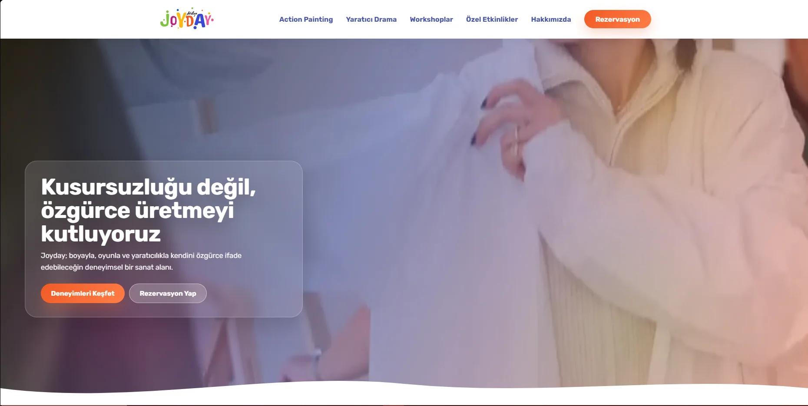
Live business website for a creative workshop studio with service pages, package presentation, responsive UX and reservation CTAs.
View Details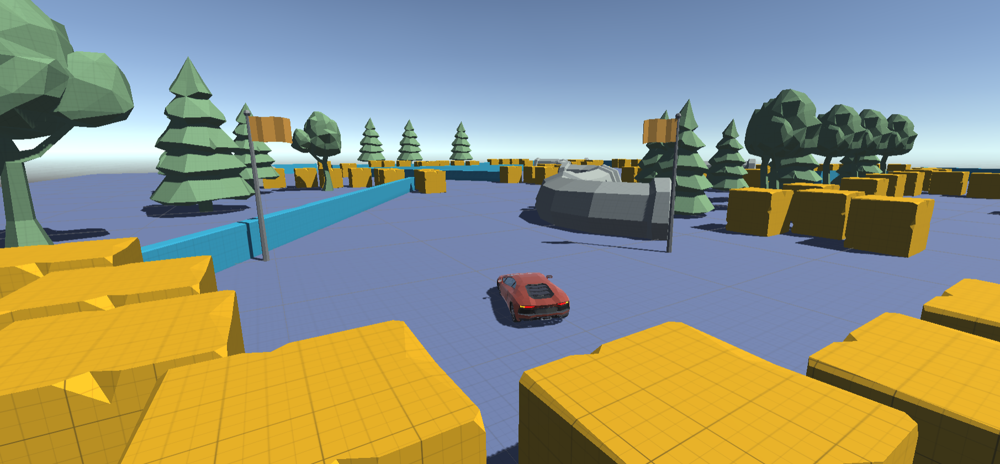
A hyper-casual 3D mobile driving simulation game focused on obstacle avoidance, score and reflex-based gameplay.
View Details
A 2D physics-based projectile game inspired by precision aiming, tower destruction and strategic shots.
View Details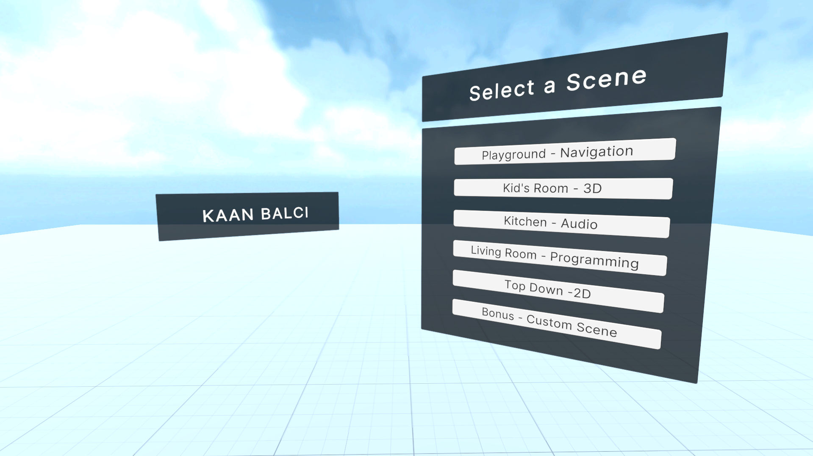
A Unity learning project containing multiple scenes, each focused on different gameplay fundamentals and mechanics.
View Details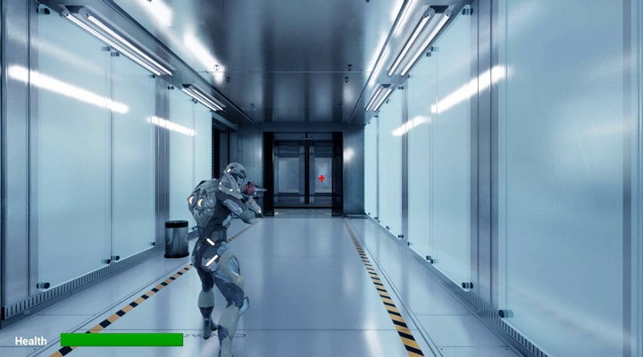
A third-person action shooter prototype with enemy AI, health management and combat-focused gameplay systems.
View Details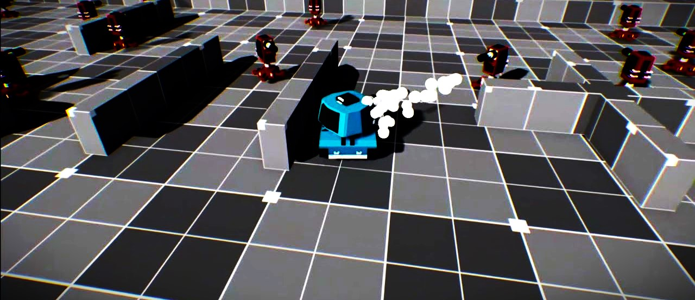
A third-person tank combat game prototype built with Unreal Engine, Blueprints, C++ and physics-based gameplay.
View Details
A comprehensive appointment automation system written in C# with MSSQL and a complex multi-form structure.
View Details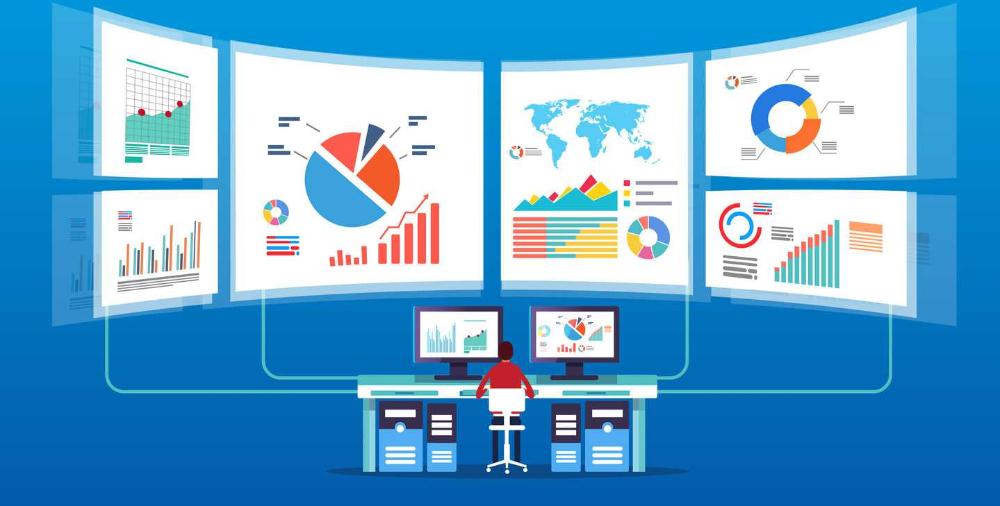
A Python-based dataset analysis project built to explore, process and present insights from automotive data.
View DetailsAn Android application built with Kotlin and Firebase to replicate core Instagram-style content features.
View Details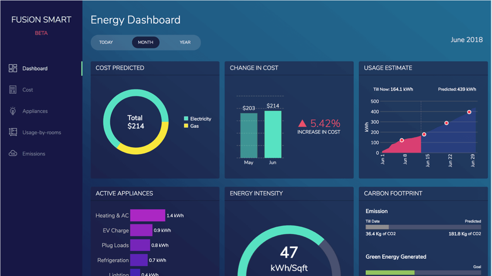
A detailed e-commerce control panel project designed with a team for a school project using web and database tools.
View Details
A JavaScript weather application that fetches forecast data and presents location-based weather information.
View Details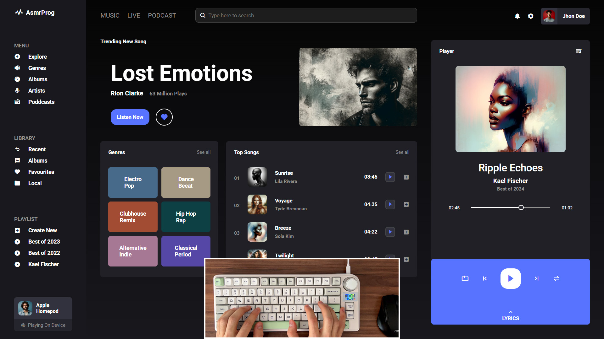
A web-based control panel project focused on admin screens, interface structure and dashboard-style management flows.
View Details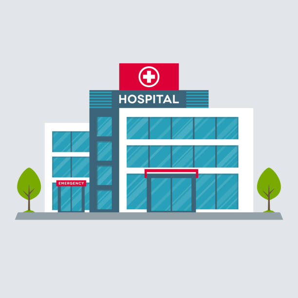
A Python and Tkinter hospital appointment automation system with MySQL-backed patient, doctor, staff and appointment workflows.
View Details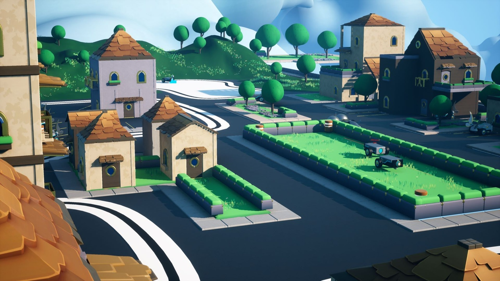
A game prototype focused on island escape mechanics, environment setup and gameplay exploration.
View DetailsA mobile calculator app built in Android Studio to practice interface structure and basic app logic.
View Details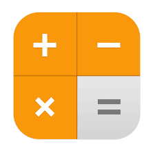
A JavaScript calculator project focused on DOM interaction, UI state and basic frontend logic.
View Details
A warehouse-themed game prototype exploring combat, environment layout and gameplay systems.
View Details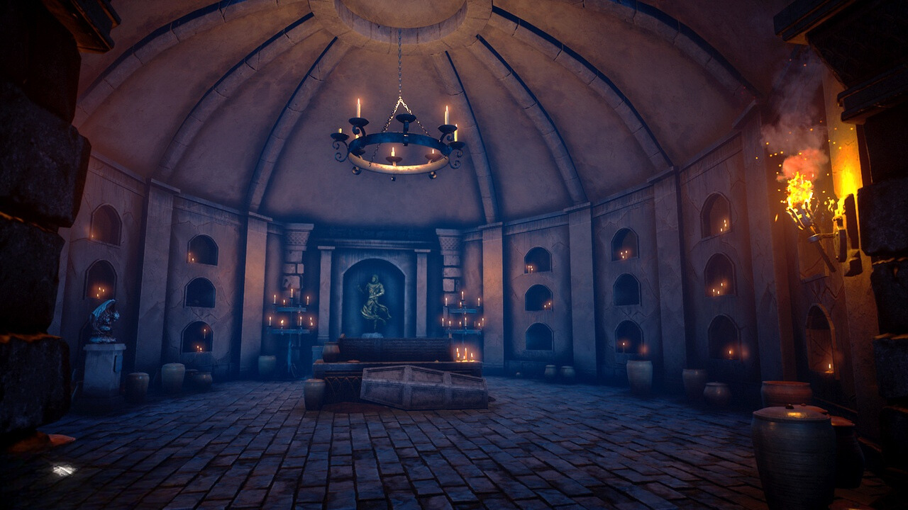
A game prototype with a darker adventure atmosphere, built around exploration and scene presentation.
View Details
A Tailwind CSS portfolio / landing page experiment focused on responsive UI, modern layout and personal branding.
View Details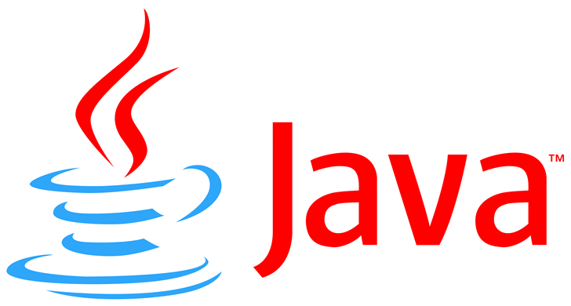
A collection of Java practice projects focused on object-oriented programming, algorithms and core language fundamentals.
View Details
A database-focused project for modeling agency-style records, relations and structured data operations.
View Details.png)
A website project focused on content structure, frontend layout and static page development.
View Details
A Python practice repository containing learning projects around programming fundamentals, automation and data-oriented logic.
View DetailsA supply-oriented project focused on inventory-style data structure, tracking logic and backend thinking.
View Details
The live personal portfolio repository combining project catalog, AI assistant, recruiter mode, request form and interactive mini game features.
View DetailsMore code
This page now includes the main public GitHub repositories, selected case studies, learning projects and archived builds in one catalog.